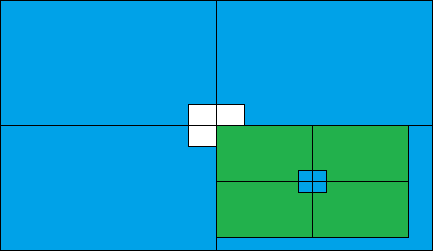

Por padrão do html, o alinhamento da caixa amarela em relação ao centro da caixa roxa, se faz, partindo do ponto left-top da caixa amarela, isto é, é este vértice esquerdo superior da caixa amarela que vai ser alinhado ao centro da caixa roxa. Vamos ver? Para isto, precisaremos da propriedade position, sendo que a caixa roxa receberá a propriedade "position: relative", e a caixa amarela receberá a propriedade "position: absolute". Após a declaração da propriedade "position", você terá acesso a alterar manualmente as propriedades "left, top, right e bottom. Vejamos. Observe que a caixa amarela foi deslocada, dentro da caixa roxa em 200 pixel da margem esquerda e 100 pixel do topo.
